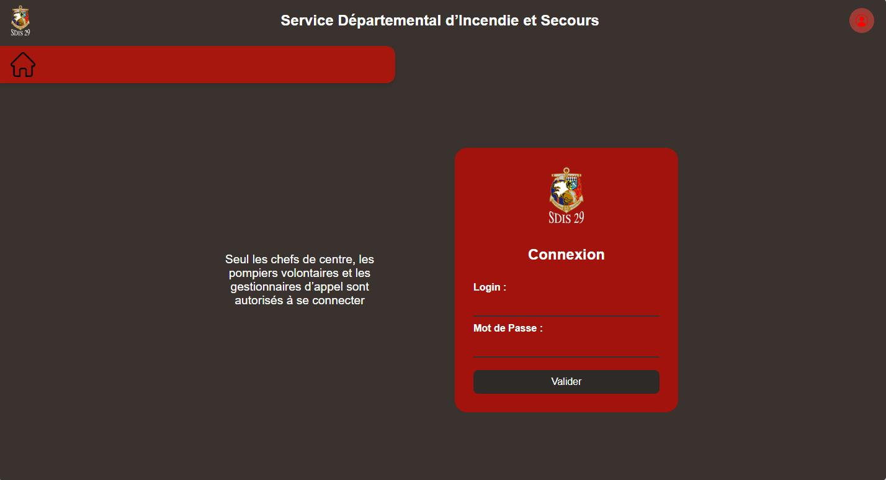
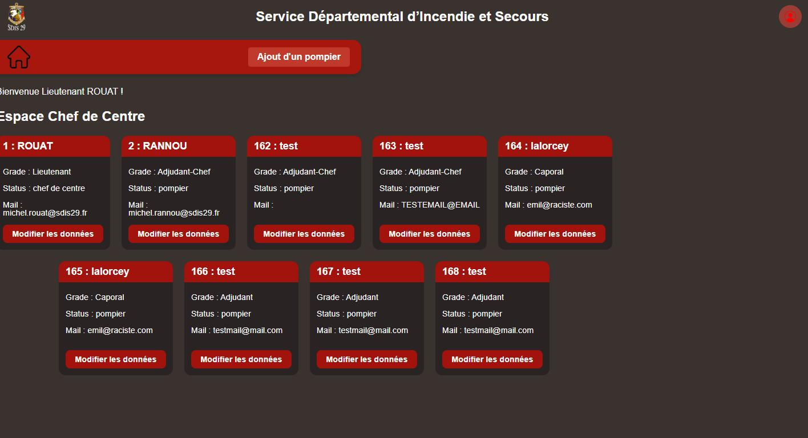
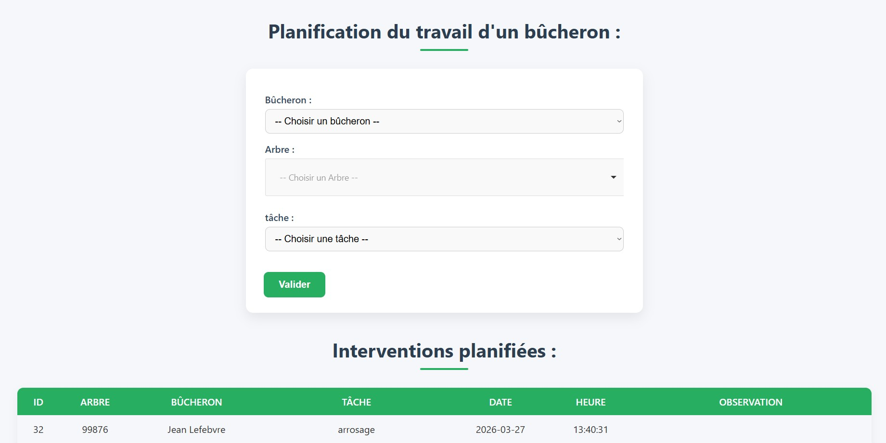
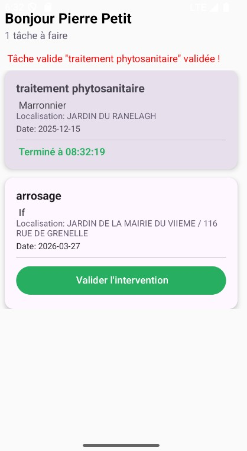
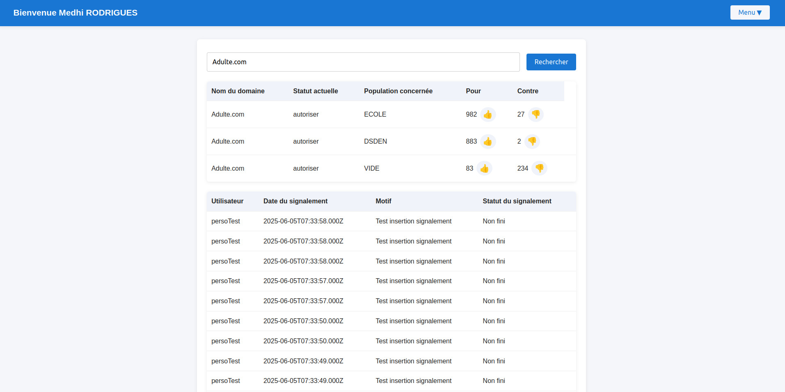
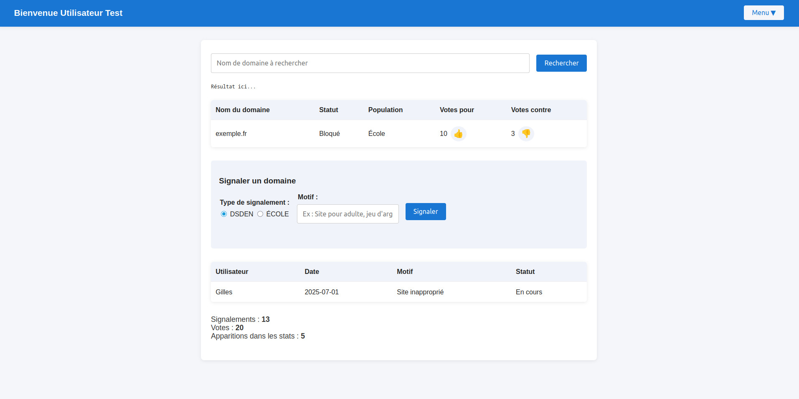
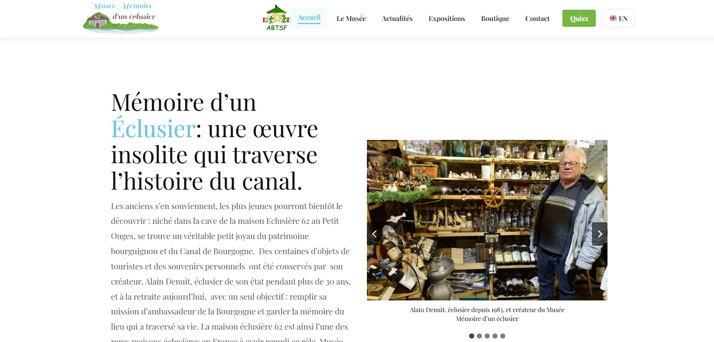
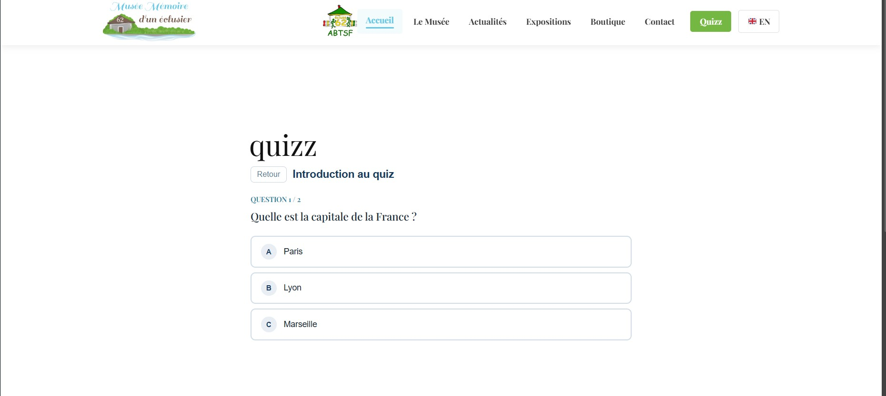

Medhi
Rodrigues
Étudiant en 2ème année de BTS SIO option SLAM au lycée le Castel, à Dijon. Je me forme au développement logiciel : applications web, bases de données, applications métier.
J’apprécie le processus de création d’une application, de l’idée jusqu’à sa réalisation. J’aime développer des projets qui sont le résultat de ma réflexion et de mes choix.
Mon parcours
BTS SIO option SLAM
Lycée le Castel, Dijon - En cours. Formation en développement d'applications, bases de données et gestion de projets informatiques.
Stage 2ème année
Association Bourguignonne Talents Sans Frontières, Dijon - 5 semaines. Création d'un site internet pour un musée avec système de quiz intégré.
Stage 1ère année
Pôle de Compétences Logiciels Libres, Dijon - 5 semaines. Création d'une application web de filtrage DNS au sein d'une équipe de développeurs.
Terminale - Bac général
Lycée Henri Parriat, Montceau-les-Mines.
Ce que je sais faire
| Langages | PHP (POO, MVC), Python, JavaScript, Java, Kotlin, HTML / CSS |
| Base de données | MySQL / MariaDB, SQLite, requêtes SQL (CRUD, jointures), modélisation MCD/MLD, PhpMyAdmin |
| Frameworks | Laravel, Node.js, React, Jakarta EE, WordPress (plugins personnalisés) |
| Outils | Gitea / GitHub, VS Code, Apache NetBeans, Trello / Jira, UML, méthode Merise |
| Systèmes | Linux (commandes courantes), TCP/IP, VirtualBox |
Projets réalisés
Application de gestion de caserne de pompiers
Application web permettant à un chef de caserne de gérer les pompiers et les horaires des pompiers volontaires. Projet réalisé en duo dans le cadre du BTS.
Contexte
Projet de 2ème année. On devait partir d'un cahier des charges fictif et livrer une application fonctionnelle dans les délais.
Objectifs
Créer une application permettant d'administrer facilement les pompiers d'une caserne et leur planning.
Mon rôle
Amélioration de la base de données, développement de l'affichage des pompiers et de leurs dates de disponibilité.
Ce que j'ai appris
Maîtriser le fonctionnement de Jakarta EE, travailler en duo avec Git, gérer proprement les sessions.


Application web + mobile pour administrer le travail des bûcherons
Application web pour assigner des tâches aux bûcherons sur des arbres, et application mobile pour qu'ils puissent consulter et valider leur travail sur le terrain.
Contexte
Projet personnel pour comprendre la synchronisation entre une base locale (SQLite) et une base distante. Objectif : faire coopérer deux applications sans connexion directe entre elles.
Objectifs
Permettre à un chef d'ajouter des tâches, et à un bûcheron de les consulter et valider depuis son téléphone.
Mon rôle
Projet solo. Développement complet des deux applications et tests avec des jeux de données variés.
Ce que j'ai appris
Synchronisation d'une base SQLite locale avec un serveur distant. Création d'une application mobile Android de A à Z.


Expériences en entreprise
Pôle de Compétences Logiciels Libres - Dijon
Secteur public · 5 semaines · Tuteur : Klass Tjebb
Contexte
Structure d'environ 10 personnes spécialisée dans les logiciels libres. Intégration dans une équipe de 6 développeurs.
Mission principale
Création d'une application web de filtrage DNS avec système de vote et interface d'administration.
Technologies
Ce que j'ai appris
Respecter des délais réels, répondre à un vrai besoin utilisateur, et livrer une application à usage professionnel.


Association Bourguignonne Talents Sans Frontières - Dijon
Secteur associatif · 5 semaines · Tuteur : Francis Contat
Contexte
Création d'un site vitrine pour un musée, avec une interface d'administration et un système de quiz.
Mission principale
Développer un site modifiable sans compétences techniques et créer un plugin sécurisé pour gérer les quiz.
Technologies
Ce que j'ai appris
Créer un site WordPress de A à Z sans plugin existant, développer et sécuriser des plugins personnalisés, livrer à un vrai client.


Ma veille techno
Je suis régulièrement les évolutions dans les domaines de la cybersécurité et des infrastructures, notamment via des podcast spécialisées et des articles de presse.
Underscore - vulgarisation tech et cybersécurité
Je suis la chaîne Underscore pour rester informé sur des sujets comme la cybersécurité, le développement et les actualités tech. Les vidéos sont accessibles et bien documentées, idéales pour une veille régulière.
Cyberattaques : 80 % des entreprises françaises admettent ne pas être prêtes alors que la menace s'industrialise
Selon une étude récente, une grande majorité des entreprises françaises reconnaissent un manque de préparation face à la montée en puissance des cyberattaques industrialisées. Cela souligne l'importance d'investir dans la formation et les solutions de défense.
Lire l'article complet →[IA Insider] Et si la France avançait enfin sur le sujet des data centers ?
L’État français découvre (enfin) que les data centers ne vont pas se construire tout seuls : à Bercy, on planche donc sur un arsenal pour accélérer les implantations, sécuriser les investissements et surtout lever les blocages très terre-à-terre
Lire l'article complet →CV
Tableau de synthèse
Me contacter
N'hésitez pas à me contacter pour toute question sur mon parcours ou une opportunité d'alternance.